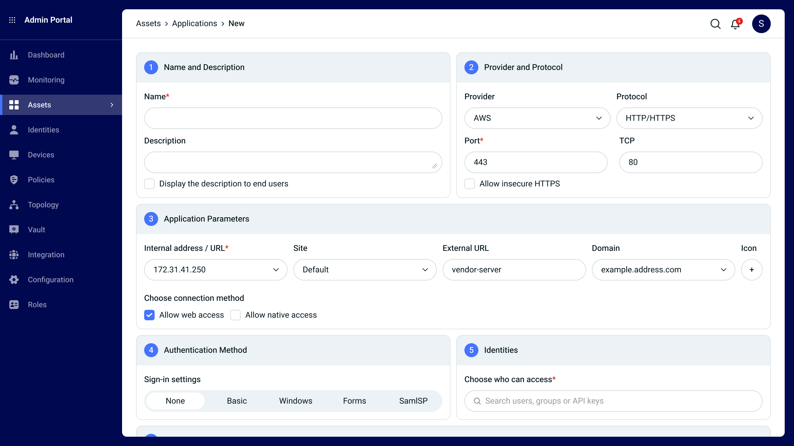
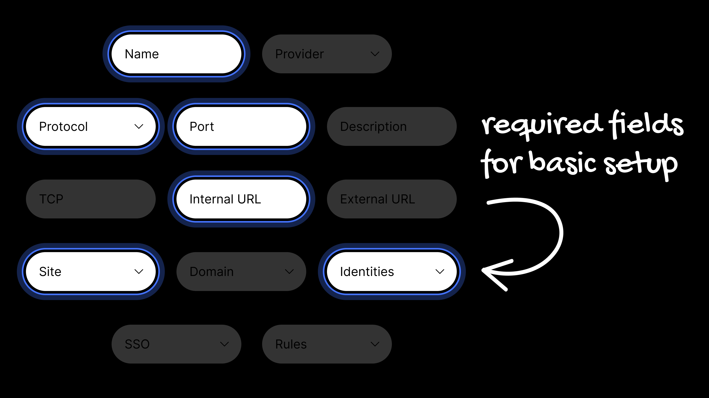
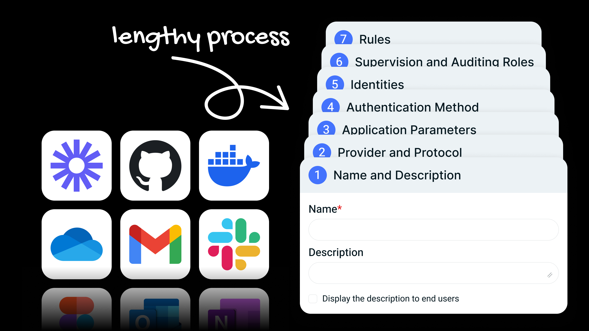
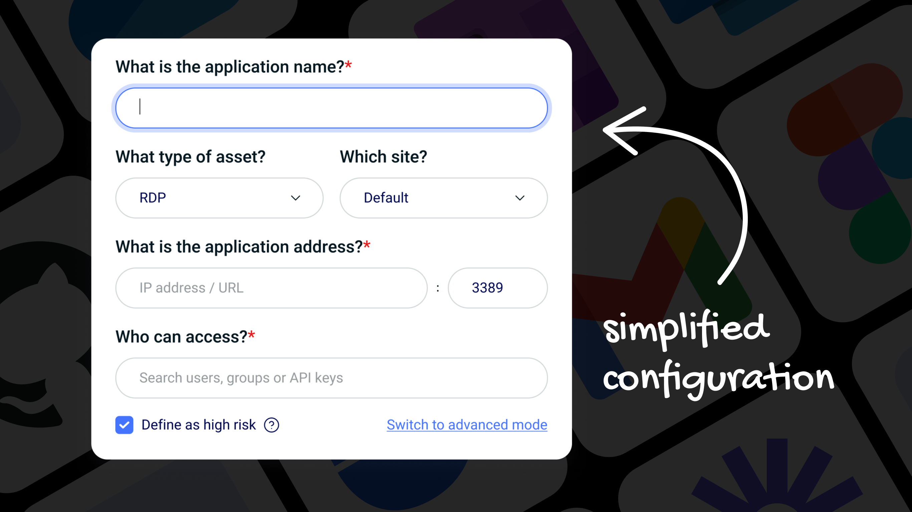
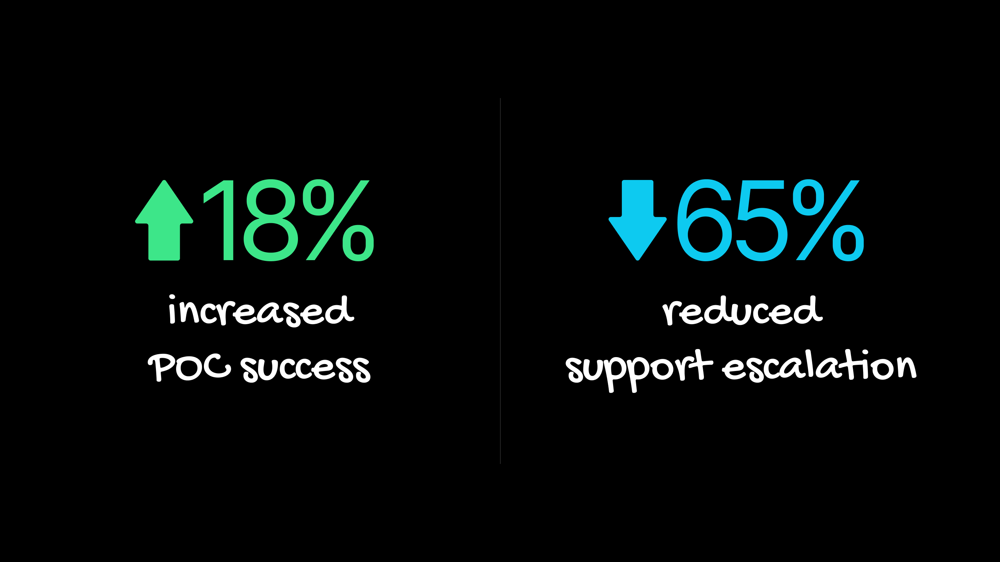

Simplified mode: By using default selections for each step, a long configuration flow was streamlined into a single modal.

Advanced mode: Configuring an app flow was a long process.
This simplified modal facilitates rapid application configuration, allows users to bypass the typical complexity of the process.

This case study details user research conducted to simplify and accelerate application setup, using a focused approach to field requirements.
Configuring an app flow was a lengthy process — up to seven steps — which led to it being time-consuming and prone to skipped steps during app creation.
Based on feedback from the CS and presale teams, only mandatory fields are now displayed in a single one-click modal. Users can also switch to an advanced mode for more fields.
This streamlined approach made a strong first impression on prospective clients and decision-makers during POCs, and offered a quick and easy resolution for the existing clients.
Based on customer feedback highlighting recurring pain points and clear business needs, I designed and validated a new focused configuration experience.
The goal of this research was to diagnose the cause of high friction and configuration errors in the setup flow. We aimed to design and validate a solution that dramatically reduces the time-on-task. The scope focused solely on the initial application configuration sequence to minimize steps for basic setup.

Analysis and stakeholder feedback (CS and Presale) confirmed a major pain point: the configuration required up to seven distinct steps. This complexity led to user fatigue, skipping non-mandatory fields, and ultimately, a frustrating, time-consuming setup that often stalled app creation.

The core solution was a simplified, single-click modal configuration. The design focused on showing only mandatory fields by default, allowing for rapid, one-step completion. An "Advanced Configuration" option was included to accommodate power-users without cluttering the initial streamlined experience.

Success was measured by improved user efficiency and external perception. Key results included:

The following data is designed to demonstrate a clear Return on Investment (ROI) for the simplified design:
By focusing on mandatory fields and user control, this project delivered a simplified workflow.
To ensure maximum adoption of the streamlined process, the new single-modal configuration was set as the default experience for all users, driving immediate efficiency gains. However, to maintain control for complex enterprise environments, a feature flag was implemented. This allows account administrators to disable the feature entirely in the application settings, reverting to the advanced, multi-step flow if required.